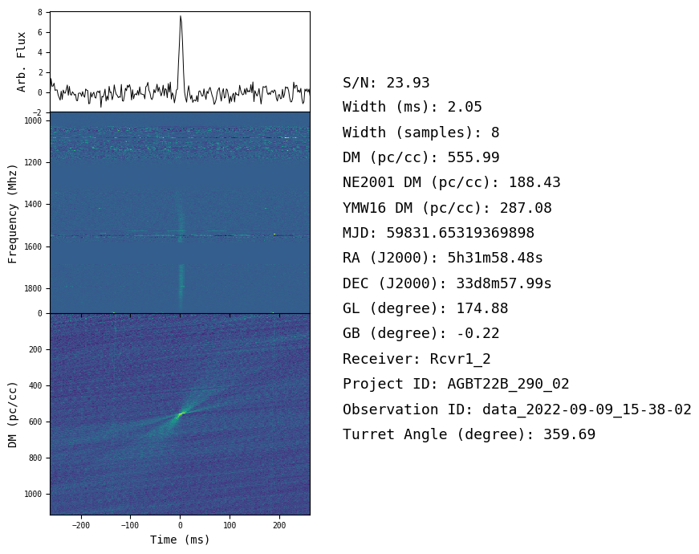

Research Projects
Project 1: Pulsar Research

How Access Was Gained:
During my Freshman year, I responded to an email from Dr. Crawford regarding my interest in his research and the NanoSTARS program. I have worked with him on his research since and was elected as a team leader at the start of my Junior year.
Research Description and Contribution:
I analyze survey data from radio telescopes searching for new pulsar signals. I filter radio frequency interferences, record redetections of known pulsars, and refold selected candidates for signal confirmation and further study. I have also used Python to program tools to sort and aid in sifting through data...
Research Skills Developed:
I have learned how to interpret data, processes and information related to surveys and observational astrophysics, and how to utilize skills in Python programming within research...
Associated Publications and Presentations:
- Submitted Publication: Wenke Xia, Fronefield Crawford, Shinnosuke Hisano, Tai Jespersen, et al.; *Reprocessing of the Parkes 70-cm Survey and Discovery of a New Radio Pulsar in the Large Magellanic Cloud* (Submitted)
- Student Teams of Astrophysics Researchers Teleconference, Feb 2025
- F&M Spring Student Research Fair, May 2024
- Student Teams of Astrophysics Researchers Teleconference, Feb 2024
- Guest Lecture: Research Presentation on Pulsar Astronomy, Oct 2023
Project 2: Auroral Acceleration Region Research

How Access Was Gained:
During the winter of my sophomore year I applied to conduct research at West Virginia University (WVU) as part of their summer REU program...
Research Description and Contribution:
In this project, I developed Python code to aid in loading, preparing, and analyzing data from Cluster mission crossings of the Auroral Acceleration Region (AAR)...
Research Skills Developed:
In the field of plasma physics I learned how to work with data taken by a spacecraft, and developed my skills in Python...
Associated Publications and Presentations:
- F&M Pre-Research Fair, Oct 2024
- WVU Undergraduate Research Symposium, Jul 2024
- Center for KINETIC Plasma Physics Workshop, Jul 2024
Project 3: Fast Radio Bursts (FRBs) Research
How Access Was Gained:
I had read about Fast Radio Bursts (FRBs) also known as Lorimer Bursts, and coincidentally Dr. Lorimer, who originally discovered these signals, worked at WVU where I was actively doing research...
Research Description and Contribution:
After receiving the data, I wrote Python code to organize and upload it. I learned to check single pulse FRB data and taught my group to repeat this process...
Research Skills Developed:
While working on this project, I built skills to organize and complete research independently.
Associated Publications and Presentations:
- N/A